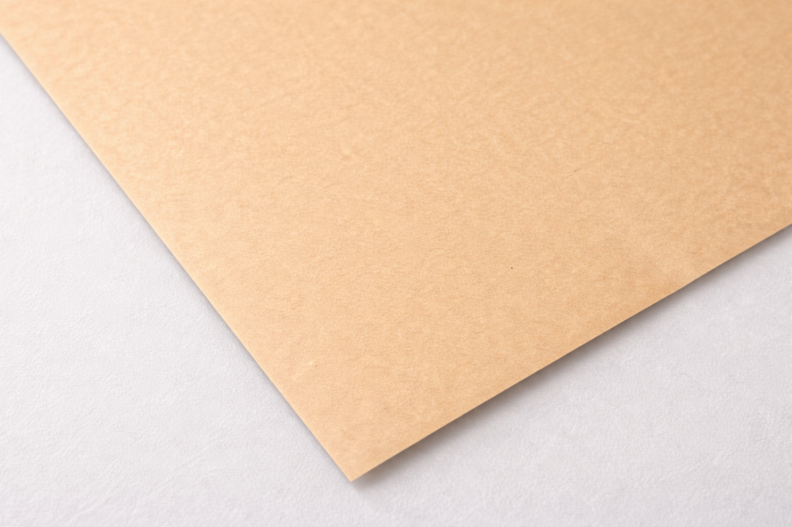
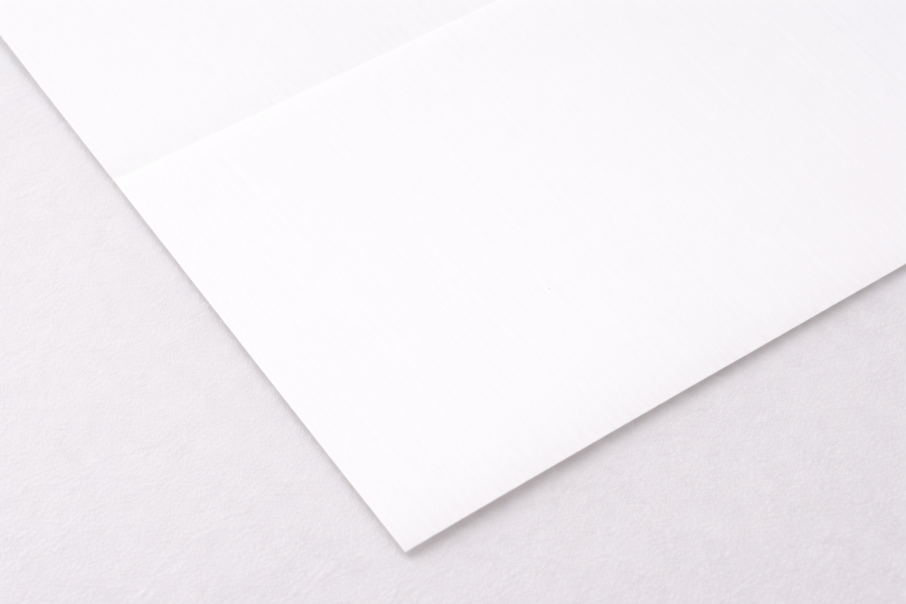
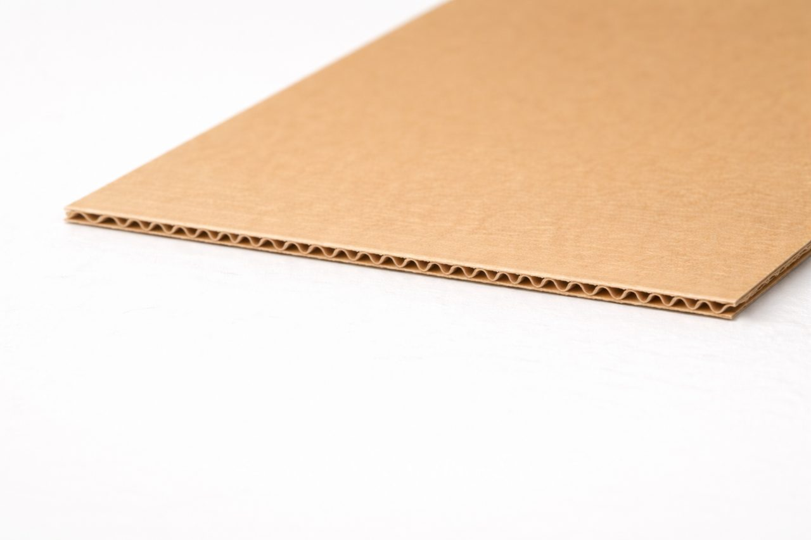
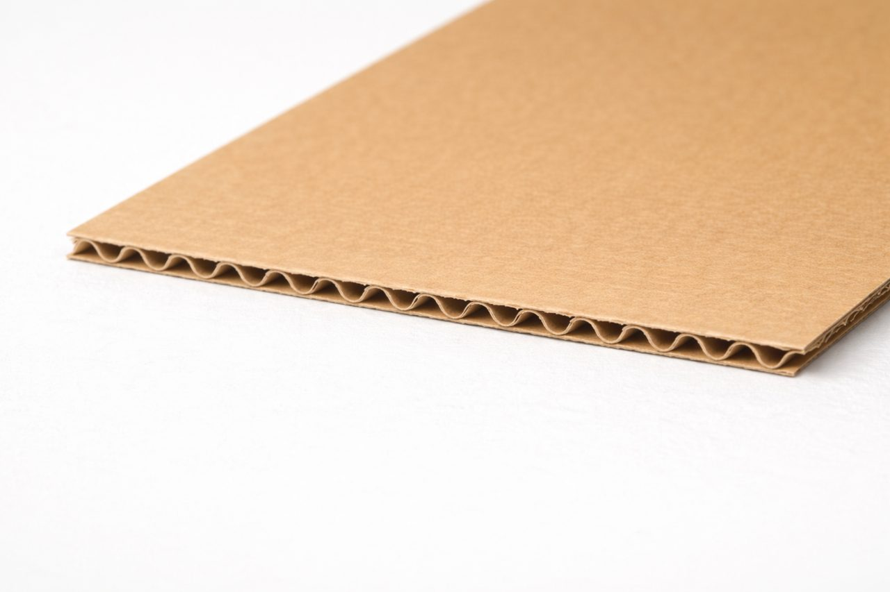
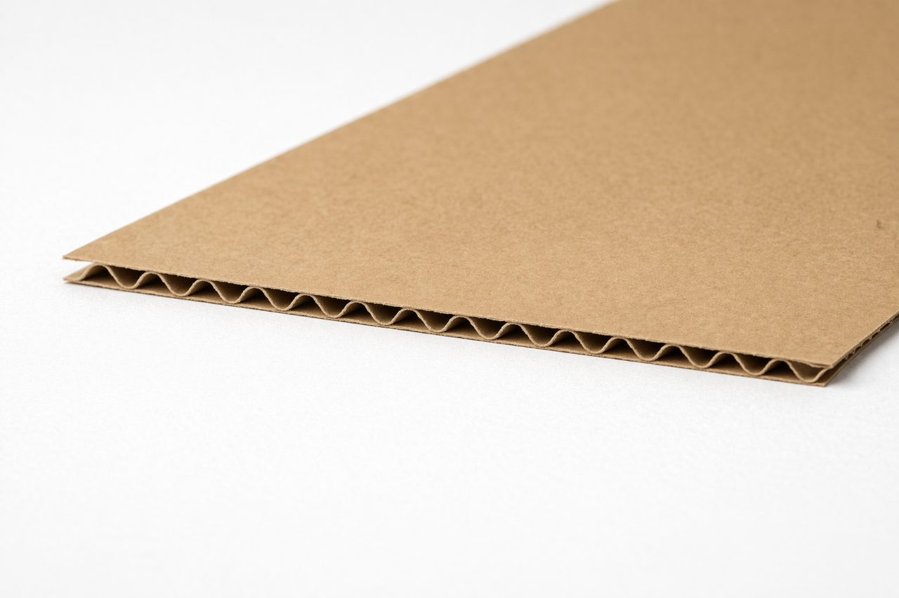
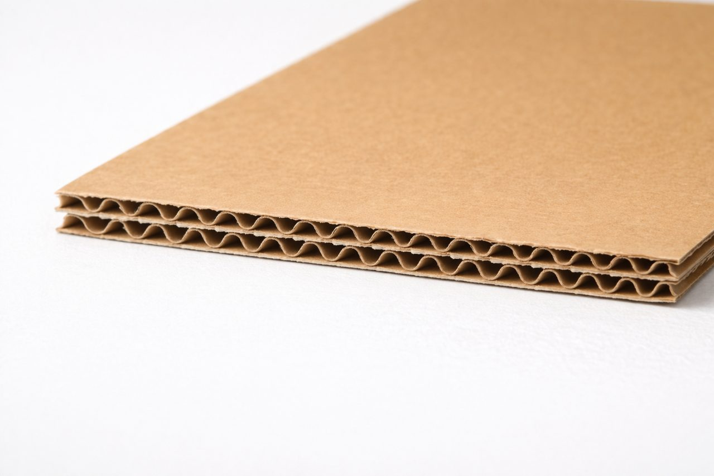
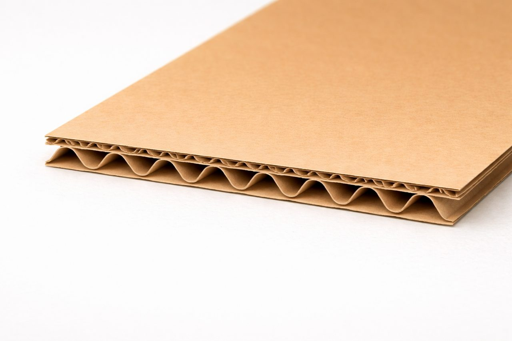

Corrugated Box
골판지박스
형태마다 쓰임새가 다릅니다. 아래에서 구조 이미지를 먼저 확인하고, 바로 샘플 요청이나 견적 문의로 넘어갈 수 있습니다.
{kind=link}
{kind=link}

{kind=link}
{kind=link}

{kind=link}
{kind=link}

{kind=link}
{kind=link}

{kind=link}
{kind=link}

{kind=link}
{kind=link}

{kind=link}
{kind=link}

{kind=link}
{kind=link}
형태가 바뀌면 포장 동선과 인상도 함께 바뀝니다.
골판지박스는 단순히 담는 상자가 아니라, 어떻게 열리고 닫히는지, 어느 면이 먼저 보이는지, 운송 중 얼마나 안정적인지가 구조에 따라 달라집니다. 가장 익숙한 배송형부터 낮고 넓은 P형, 길이가 긴 포스터형까지 제품 성격에 맞는 형태를 고르는 것이 첫 단계입니다.
배송 중심이라면
상하 플랩 구조나 결합이 단단한 형태가 유리합니다. 완충성과 적재성을 먼저 보고 선택하는 편이 안정적입니다.
개봉 경험을 살리고 싶다면
뚜껑이 길게 열리거나 낮게 펼쳐지는 타입이 좋습니다. 제품을 꺼낼 때의 동선과 전면 인쇄 영역도 함께 보세요.
강도 기준과 표면지 성격을 함께 보면 선택이 쉬워집니다.
같은 골판지박스라도 어떤 표면지를 쓰는지, 어느 정도 강도를 기준으로 잡는지에 따라 결과가 달라집니다. 브랜드 인상은 표면지가 만들고, 실제 출고 안정감은 종이 등급과 구조가 함께 결정합니다.

크라프트 계열
내추럴하고 따뜻한 인상을 주는 표면지입니다. 택배형 패키지, 친환경 무드, 편안한 브랜드 톤과 잘 맞습니다.

백색 계열
색감과 인쇄 선명도를 높이고 싶을 때 유리합니다. 깔끔하고 정돈된 인상을 주기 좋아 브랜드 패키지에 많이 검토됩니다.
KLB · SK · K · B · S 등급
종이 등급은 강도와 외관의 기준입니다. 실제 선택은 제품 무게, 배송 방식, 인쇄 방향, 예산을 함께 고려해 결정하는 것이 가장 정확합니다.
실무 선택 기준
가벼운 제품은 인쇄·표면 인상을 먼저 보고, 중량 제품은 구조와 강도를 먼저 본 뒤 표면지를 맞추는 순서가 안전합니다.
표면지 톤에 따라 첫인상이 달라집니다.
골판지는 구조만 보는 재료가 아니라, 겉면이 어떤 질감과 색을 갖는지에 따라 제품 인상도 크게 달라집니다. 내추럴한 느낌을 원하면 크라프트 계열, 인쇄 선명도를 높이고 싶다면 화이트 계열을 검토하는 방식으로 접근하면 이해가 쉽습니다.


골두께는 보호력, 강도, 인쇄 느낌까지 함께 바꿉니다.
현장에서 가장 많이 비교하는 포인트만 쉽게 다시 정리했습니다. B골은 가장 보편적인 선택이고, A골은 완충성이 좋으며, BB골·BA골은 이중골이라 더 무겁거나 큰 제품에서 안정감이 높습니다. 외측 규격 기준으로 박스를 잡되, 골 두께에 따라 내측 치수가 달라질 수 있다는 점도 함께 보셔야 합니다.


E골
약 1.5mm
얇고 촘촘한 구조라 단정한 외형이 필요한 패키지에 잘 맞습니다. 합지박스, 칼라박스, 소형 포장처럼 인쇄와 마감 인상이 중요한 작업에 자주 사용됩니다.

B골
약 3mm
가장 대중적인 골입니다. 밀도와 보존성이 좋아 일반 택배박스, 식품박스, 생활용품 포장에 폭넓게 사용됩니다.

A골
약 5mm
완충성이 우수한 구조입니다. 가볍지만 부피가 큰 제품, 충격 흡수가 중요한 제품처럼 보호력이 중요한 포장에 적합합니다.

BB골
약 6mm
B골 + B골의 이중골 구조입니다. 강도와 완충성을 함께 챙길 수 있어, 작지만 무게가 있는 제품이나 장거리 운송 포장에 유리합니다.

BA골
약 8mm
위는 B골, 아래는 A골이 결합된 이중골 구조입니다. 두께와 안정감이 높아 부피가 크고 무거운 제품, 산업용·물류형 포장에 많이 검토됩니다.
골판지 선택 전에 자주 확인하는 질문
택배용은 무조건 두꺼운 골을 써야 하나요?
항상 그렇지는 않습니다. 제품 무게와 적재 환경, 운송 거리, 박스 크기를 함께 봐야 합니다. 과도하게 두꺼운 골은 비용과 보관 효율에 영향을 줄 수 있습니다.
인쇄가 중요한 박스는 어떤 재질이 유리한가요?
세밀한 디자인 표현이 중요하면 백색지 계열이나 얇은 골 구조가 유리할 수 있습니다. 칼라박스 느낌이 필요한 경우 E골 또는 합지 구조를 함께 검토하는 경우가 많습니다.
크라프트와 백색지 중 어느 쪽이 더 좋나요?
좋고 나쁨보다 목적 차이입니다. 크라프트는 내추럴하고 편안한 인상, 백색지는 깔끔하고 선명한 인상에 더 잘 어울립니다.